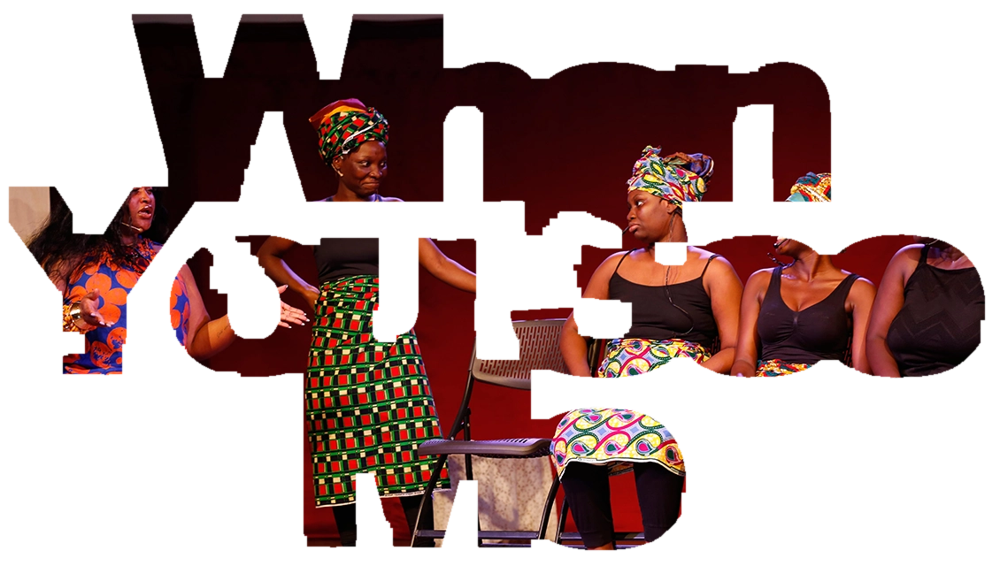

When You See Me — research and creative works on gender-based violence
You See
Me

When You See Me is a research program and artistic project on the roles of individuals and communities in preventing gender-based violence and supporting survivors. It illuminates how people can make a difference when they prioritise and see survivors of violence.
Featured
Publications
When You See Me

A short story about the people around a survivor of gender-based violence: the neighbours, friends and traditional leaders whose response can open a path to safety, or close it off. It gives its name to the research and creative programme this website presents.
Read more …More publications:

Creative
Works
Community Theatre

Scenes are built with performers and community members rather than written for them, so what happens on stage is recognisable to the people watching it.
Each performance ends in conversation: what help exists here, who to ask, and what usually gets in the way.
Read more …More creative works:
Programs
Training Workshops
When You See Me works closely with leaders who can be influential in their communities. Queenmothers from the Greater Accra and Volta Regions, as well as Nigerian community leaders, participated in the training.
Read more …More programs: